Step 1
Tilt switch, no code
The LED stays on while the board is flat and turns off when I tilt it. There is no program here: the Pico only supplies power, and the tilt switch sits in the same loop as the LED, so when it tips it opens the loop and cuts the current. The problem I solved was making the LED react to tilt without needing any code, because the switch itself does the work.
Wiring: 3V3(OUT) (pin 36) → tilt switch → 220 Ω resistor → LED long leg (+) → LED short leg (−) → GND (pin 38).
Circuit diagram
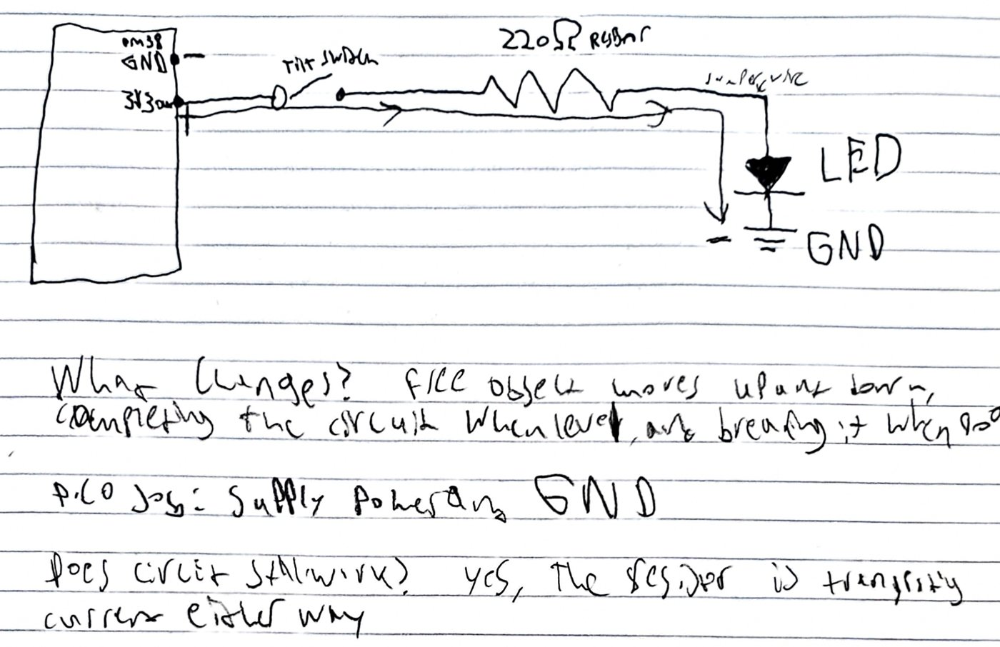
The circuit
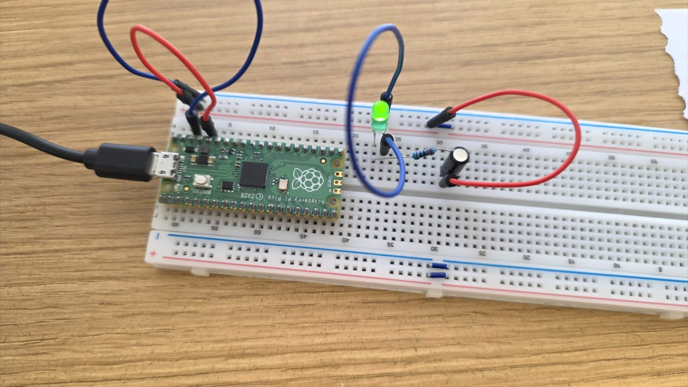
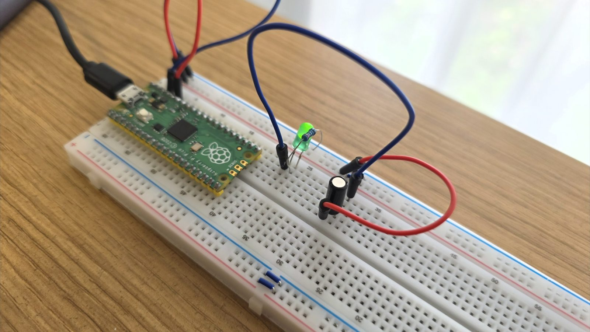
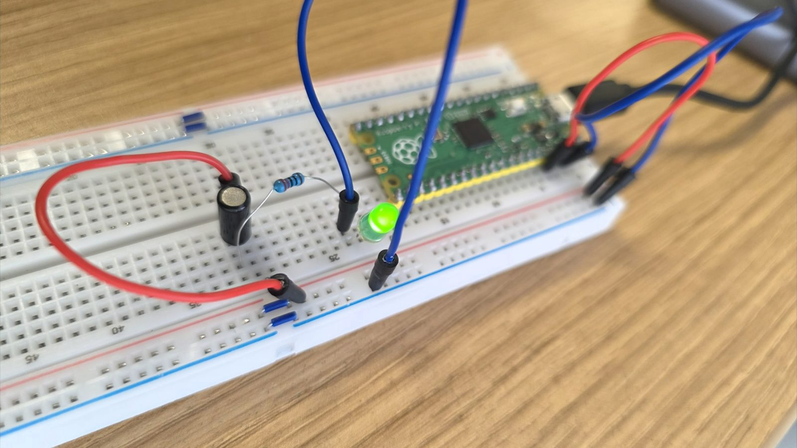
It works
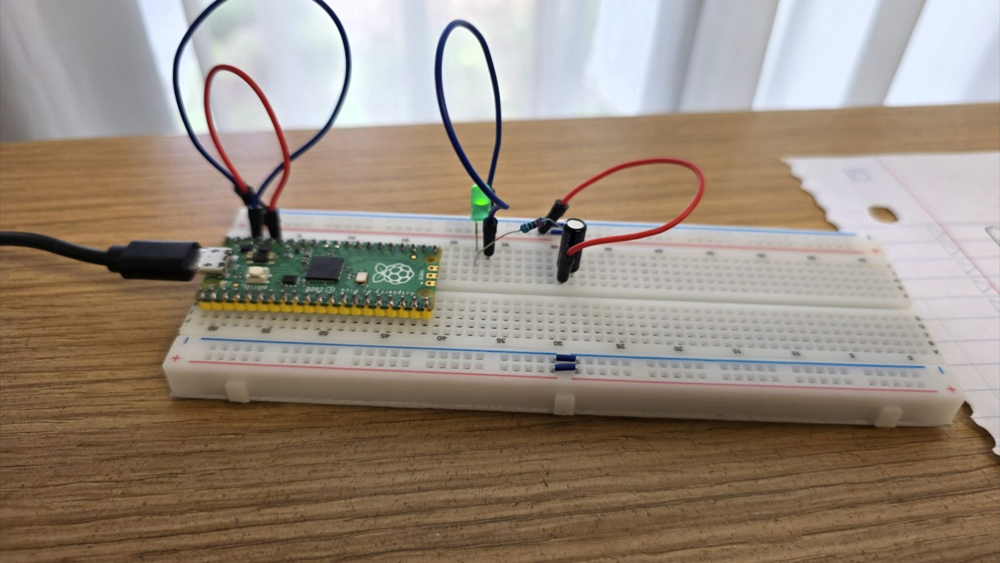
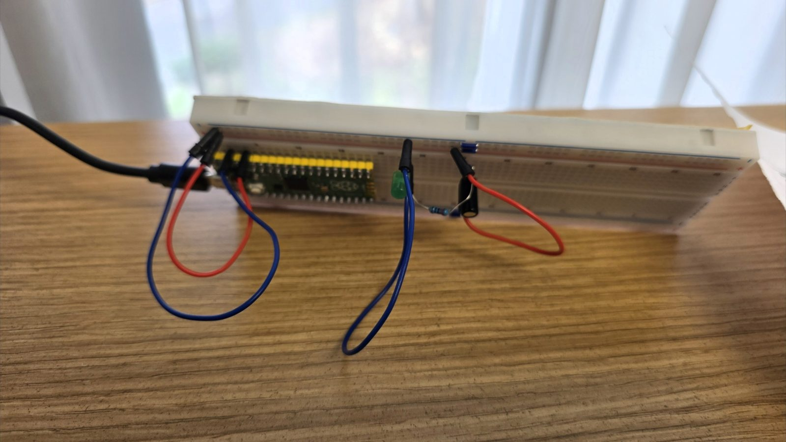
Step 2
Tilt switch with code
Same parts, rewired so the Pico reads the tilt switch: now the LED is off while flat and turns on when tilted, the opposite of Step 1. With the Pico's internal pull-up on, GP15 reads 1 when the switch is open (tilted) and 0 when it is closed (flat, connected to GND), and the LED simply copies that value. Using the internal pull-up meant I didn't need a resistor on the switch at all.
Wiring: GP15 (pin 20) → tilt switch → GND, using the Pico's internal pull-up. GP16 (pin 21) → 220 Ω resistor → LED long leg; LED short leg → GND.
The circuit
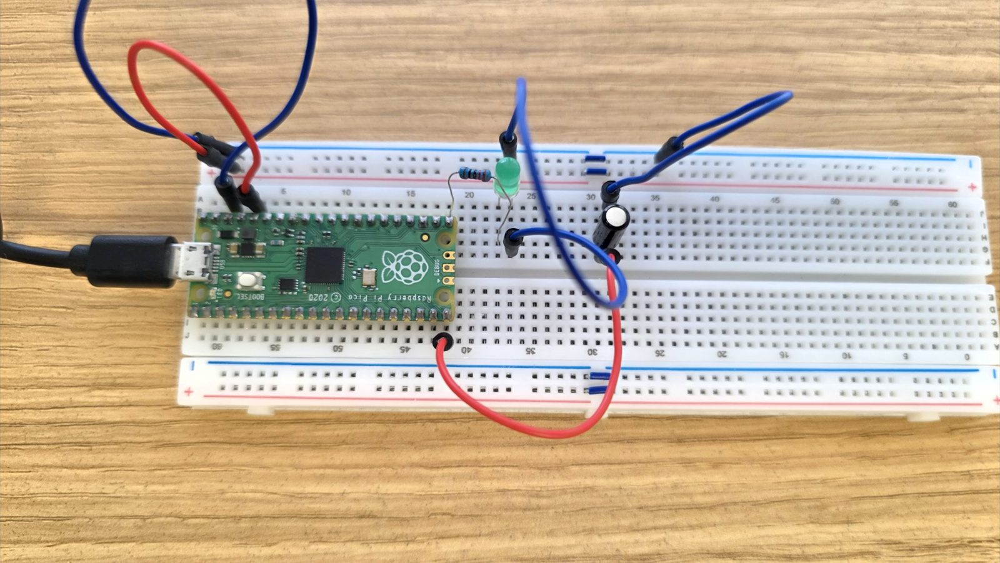
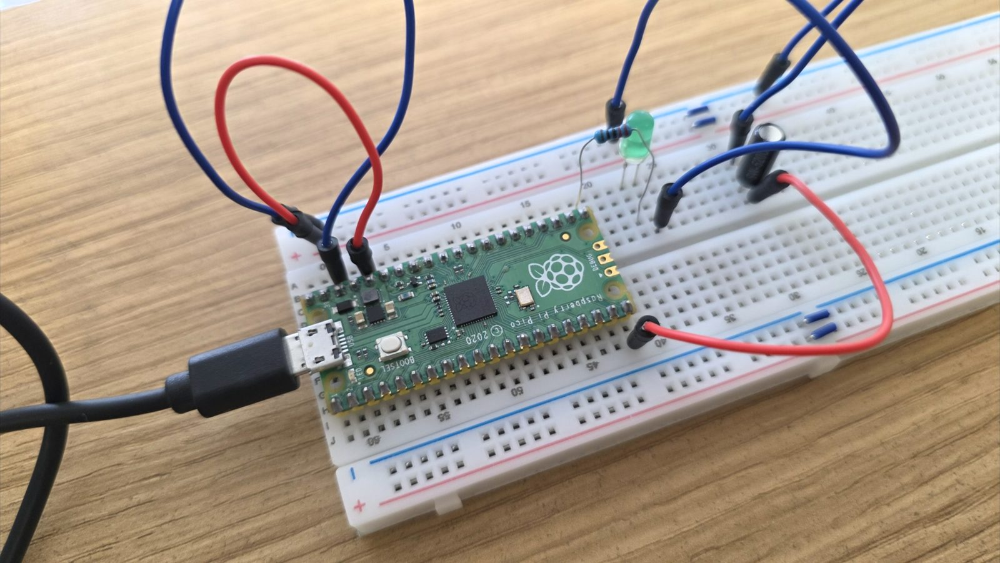
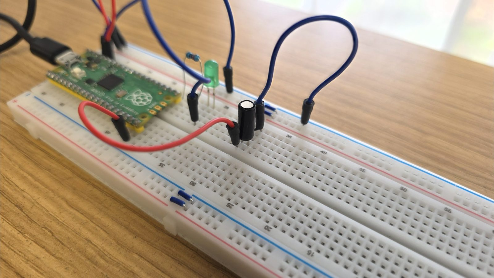
It works
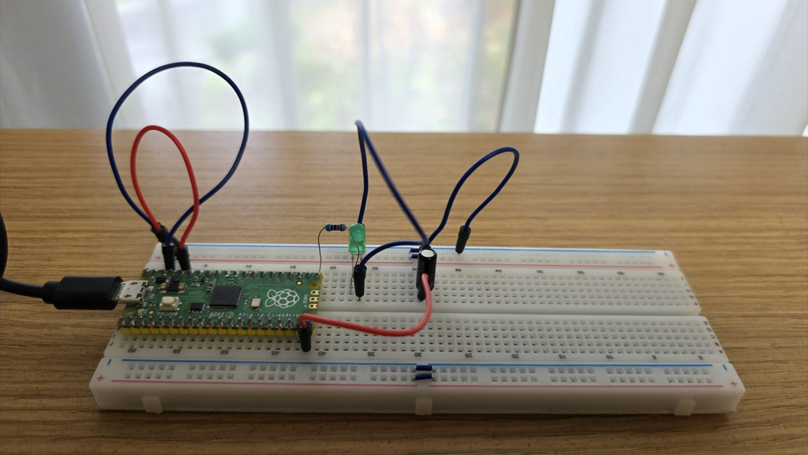
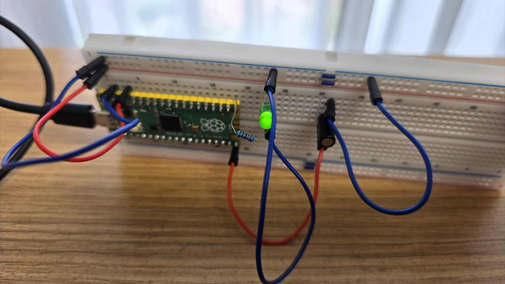
Code
from machine import Pin
import time
tilt = Pin(15, Pin.IN, Pin.PULL_UP)
# internal pull-up on
led = Pin(16, Pin.OUT)
while True:
led.value(tilt.value())
# LED copies the tilt switch
time.sleep(0.05)Step 3
Sun tracker
Two light sensors sit on the servo horn with a small cardboard wall (cut from a gum package) between them, so one looks left and one looks right. The servo turns toward the brighter side and the indicator LED lights up when it is pointing at the light.
At first the servo kept running to one end of its range, because the LDRs weren't mounted on the horn yet, so turning didn't change what they saw. Mounting them on the horn fixed that, and I improved the code to average several readings and to take bigger steps when the light is far off-center and smaller steps as it lines up.
Wiring: Each LDR runs from 3V3(OUT) (pin 36) to an ADC pin, with a 10 kΩ resistor from that pin to GND (a voltage divider): left LDR → GP26 (pin 31), right LDR → GP27 (pin 32). Servo: 5 V → VBUS (pin 40), GND → GND, signal → GP16 (pin 21). Indicator LED: GP17 (pin 22) → 220 Ω → LED → GND.
The circuit
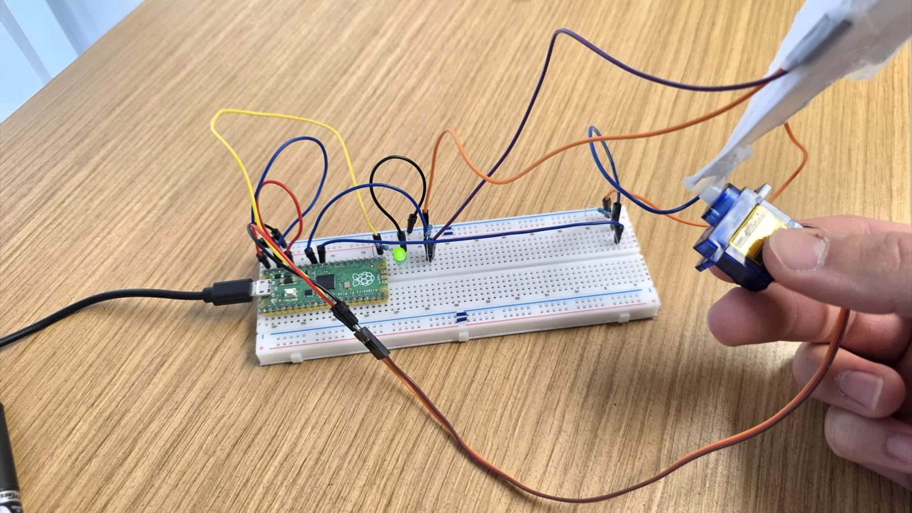
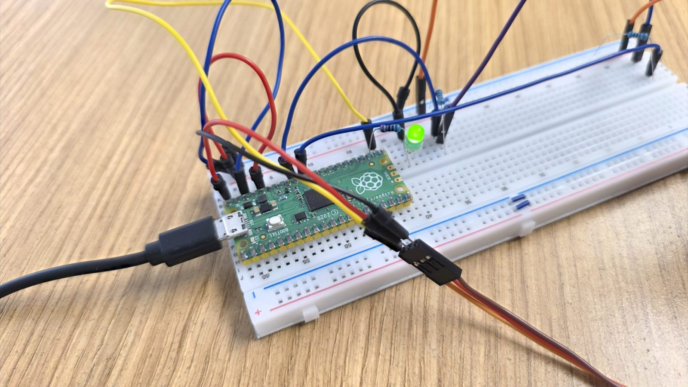
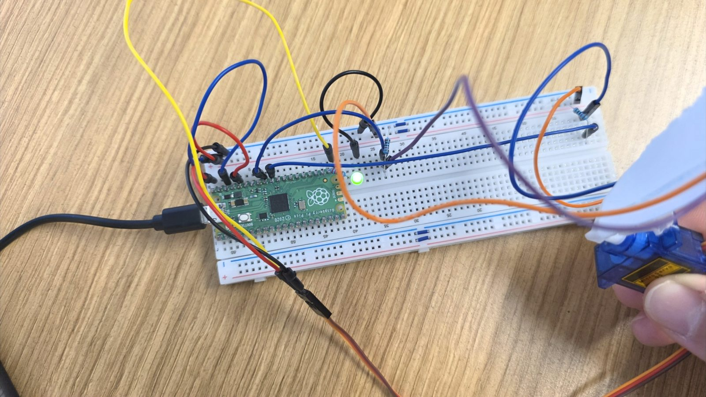
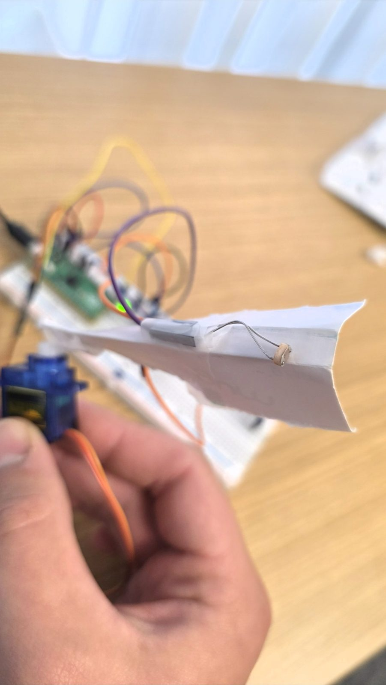
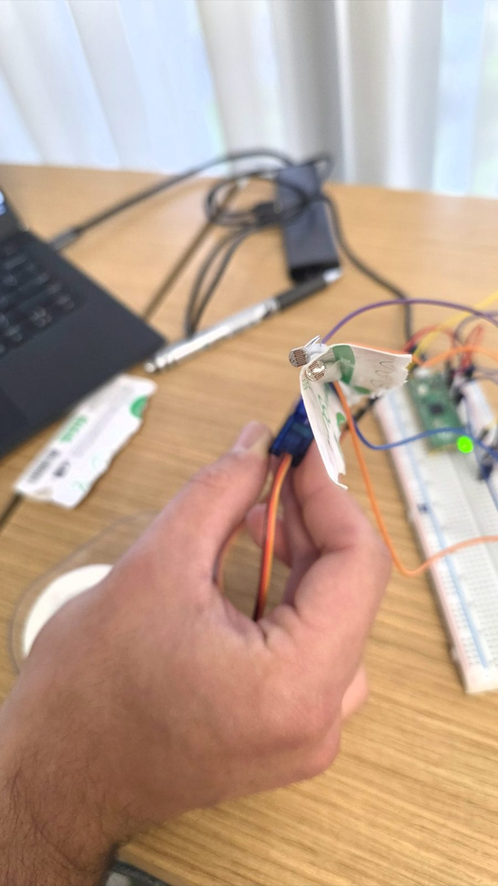
It works
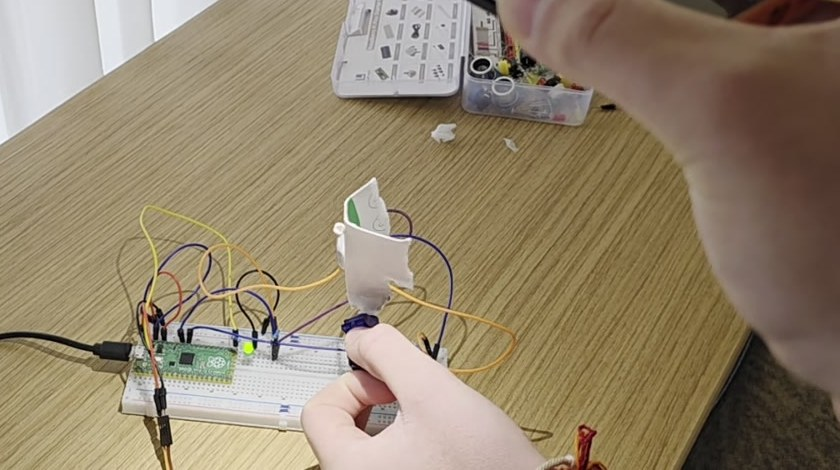
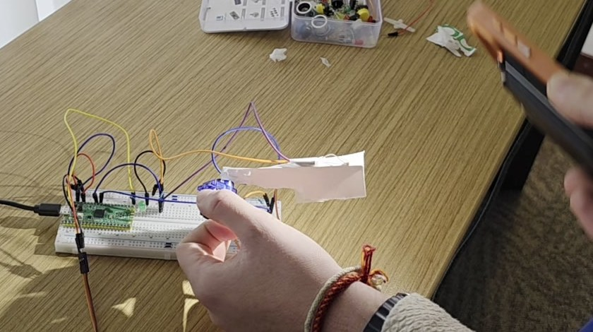
Video
3a: Sensor readings
Raw read_u16() values (0 to 65535) from the two LDR voltage dividers. Higher means brighter.
| Situation | Left (GP26) | Right (GP27) |
|---|---|---|
| Both LDRs uncovered | 55162 | 56731 |
| Left LDR covered with a finger | 38824 | 56913 |
| Right LDR covered with a finger | 54006 | 37014 |
| Flashlight on the left LDR | 61096 | 54670 |
from machine import ADC
import time
left = ADC(26)
right = ADC(27)
while True:
print("left:", left.read_u16(), " right:", right.read_u16())
time.sleep(0.2)# Step 3b: Sun tracker
# LDRs are mounted on the servo horn. The servo turns toward the brighter
# side, anywhere in its full 0-180 range, and stops when both sides match.
# The indicator LED turns on when it's pointing at the light.
from machine import Pin, PWM, ADC
import time
left = ADC(26)
# left LDR divider
right = ADC(27)
# right LDR divider
led = Pin(17, Pin.OUT)
# indicator LED
servo = PWM(Pin(16))
servo.freq(50)
# servo needs 50 pulses per second
DIRECTION = 1
# change to -1 if the servo turns AWAY from the light
MARGIN = 0.03
# within 3% difference = pointing at the light
GAIN = 20
# bigger difference = bigger step (bigger GAIN = faster)
MAX_STEP = 10
# most degrees it can move in one loop
def set_angle(angle):
duty = int(1638 + angle * (8192 - 1638) / 180)
# formula from the assignment
servo.duty_u16(duty)
def read_avg(adc, samples=8):
total = 0
for _ in range(samples):
total += adc.read_u16()
return total // samples
# average several readings to smooth out noise
angle = 90
set_angle(angle)
# 1. start with the servo at 90
while True:
l = read_avg(left)
r = read_avg(right)
# a. read the left and right LDRs
error = (l - r) / (l + r + 1)
# difference as a fraction of total light (-1 to 1), 0 means equal
if error > MARGIN:
# b. left is brighter: turn toward the left
step = min(MAX_STEP, GAIN * error)
angle = angle + DIRECTION * step
led.value(0)
elif error < -MARGIN:
# c. right is brighter: turn toward the right
step = min(MAX_STEP, GAIN * -error)
angle = angle - DIRECTION * step
led.value(0)
else:
led.value(1)
# d. pointing at the light: LED on
angle = max(0, min(180, angle))
# e. keep it between 0 and 180 (full range)
set_angle(angle)
time.sleep(0.02)Homework project
Automatic lid opener
A hand near the box opens the lid, and after about 8 seconds with no hand it closes again; a knob sets how wide it opens. When the obstacle sensor reads 0, the code remembers the time and moves the servo toward the knob's angle one degree at a time, so the lid opens and closes smoothly.
The hardest part was getting the servo to actually lift the lid: a string pulling the lid and a servo mounted inside the box were both too weak, and a servo that jumps straight to its angle tore itself off the glue. I superglued the servo on and made it move one degree at a time, set the closed angle to 40° so it stops right where the lid shuts instead of swinging further down, and lengthened the open time from 3 to 8 seconds so I had time to set the opening angle with the knob.
Wiring: Obstacle avoidance module: VCC → 3V3(OUT) (pin 36), GND → GND, OUT → GP14 (pin 19); it outputs 0 when it sees something close. Potentiometer: outer legs → 3V3 and GND, middle leg → GP26 (pin 31). Servo: 5 V → VBUS (pin 40), GND → GND, signal → GP16 (pin 21).
The circuit
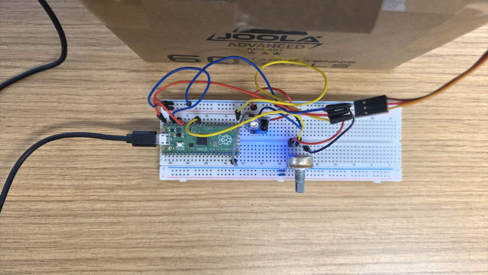
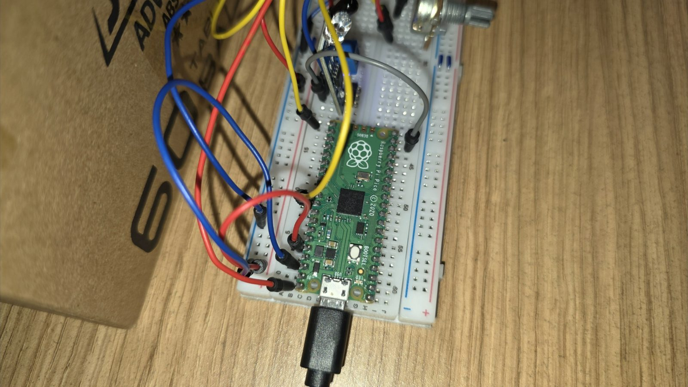
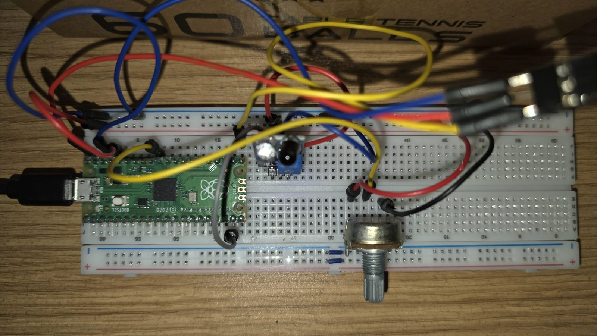
It works
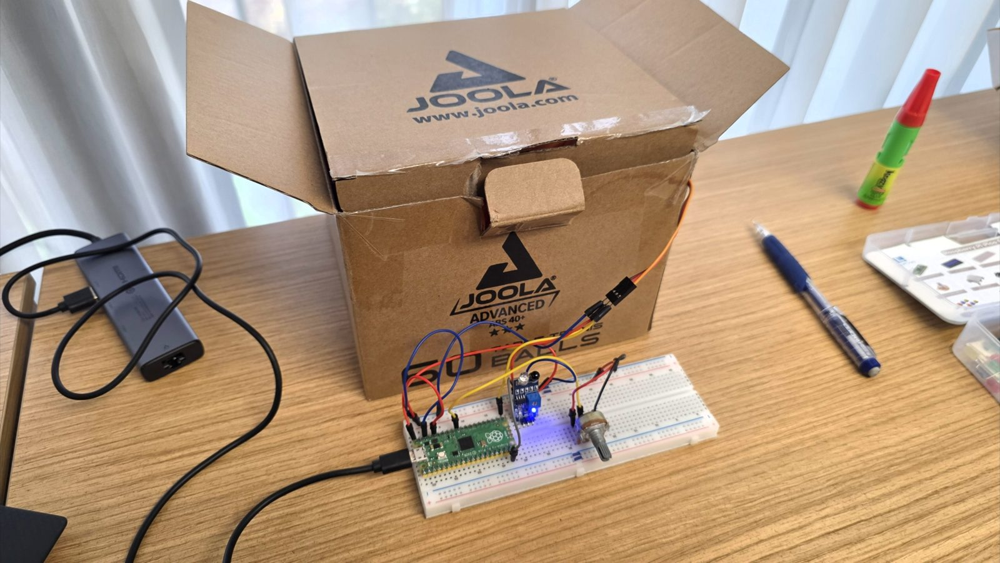
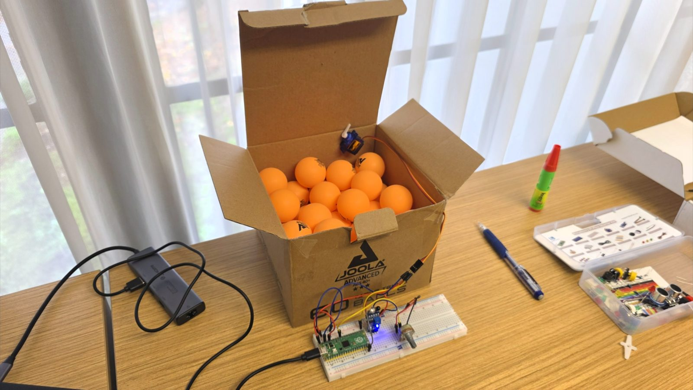
Video
Code
# Automatic lid opener
# A hand near the box slowly opens the lid to the angle set by the knob.
# After a few seconds with no hand, the lid slowly closes.
from machine import Pin, PWM, ADC
import time
sensor = Pin(14, Pin.IN)
# obstacle module OUT: 0 = something close, 1 = nothing
knob = ADC(26)
# potentiometer middle leg: 0 to 65535
servo = PWM(Pin(16))
servo.freq(50)
# servo needs 50 pulses per second
CLOSED_ANGLE = 40
# the servo arm reaches the closed lid at 40, so it stops there instead of swinging further down
STAY_OPEN_MS = 8000
# how long the lid stays open after the hand leaves (long enough to adjust the knob)
STEP = 1
# degrees moved per loop (bigger = faster)
STEP_DELAY = 0.02
# seconds between steps (bigger = slower)
def set_angle(angle):
angle = max(0, min(180, angle))
# keep it between 0 and 180
duty = 1638 + angle * (8192 - 1638) // 180
# formula from Step 3
servo.duty_u16(duty)
def knob_angle():
return knob.read_u16() * 180 // 65535
# scale the knob reading (0 to 65535) to an angle (0 to 180)
current = CLOSED_ANGLE
# where the servo is right now
set_angle(current)
last_seen = None
# time (ms) the hand was last detected
while True:
if sensor.value() == 0:
# hand detected
last_seen = time.ticks_ms()
hand_recent = (last_seen is not None and
time.ticks_diff(time.ticks_ms(), last_seen) < STAY_OPEN_MS)
# True if a hand was seen in the last few seconds
if hand_recent:
target = knob_angle()
# open to the knob's angle
else:
target = CLOSED_ANGLE
# close
last_seen = None
if current < target:
current = min(current + STEP, target)
elif current > target:
current = max(current - STEP, target)
# move a small step toward the target instead of jumping straight there
set_angle(current)
time.sleep(STEP_DELAY)